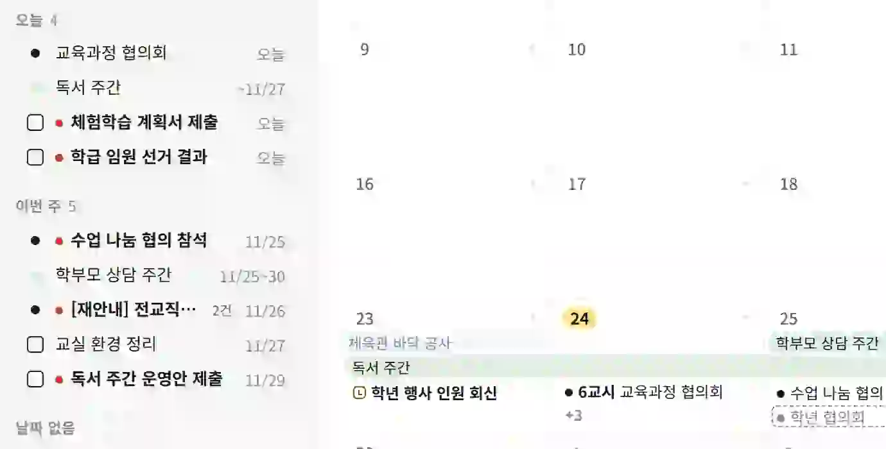
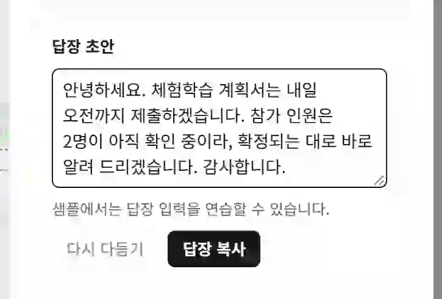
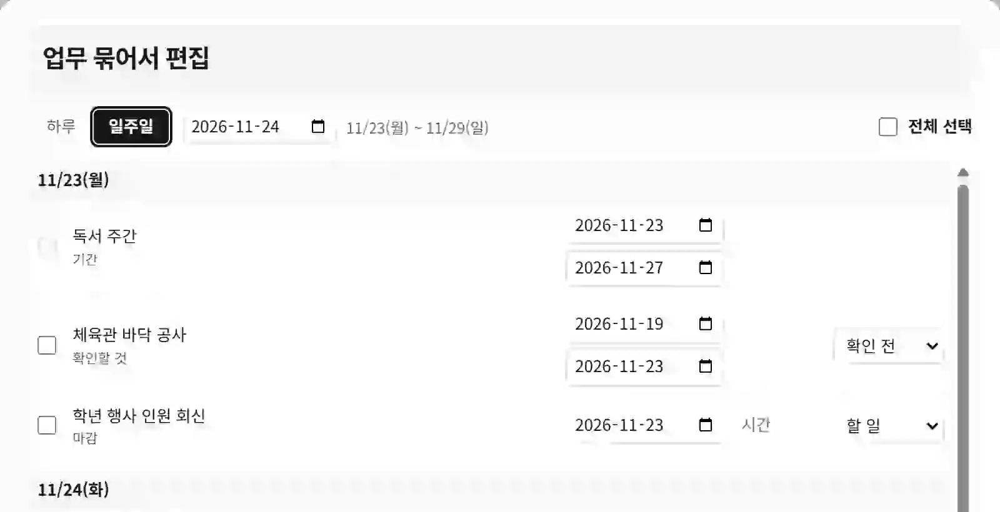

쪽지 자동 정리
‘오늘까지 제출’이
오늘 할 일로.
쪽지에서 할 일과 기한을 찾아 달력에 올려요. 오늘 할 일과 지난 마감은 목록에서 바로 확인해요.
체험학습 계획서는 오늘까지 제출해 주세요.

 메신저 캘린더
브리티 메신저 캘린더
메신저 캘린더
브리티 메신저 캘린더
쪽지 정리 귀찮으셨나요?
브리티·GOE 쪽지에서 제출, 회신, 신청 기한을 찾아 달력에 올려요.
쪽지 자동 정리
쪽지에서 할 일과 기한을 찾아 달력에 올려요. 오늘 할 일과 지난 마감은 목록에서 바로 확인해요.
체험학습 계획서는 오늘까지 제출해 주세요.

쪽지 자세히
할 일을 누르면 쪽지와 첨부 목록이 함께 열려요. 답장할 말을 적고 ‘다듬기’를 누르면 초안을 써 줘요.

묶어서 편집
하루나 일주일을 골라 날짜와 시간을 바꾸고, 끝낸 일도 같은 화면에서 완료로 표시해요.

회의 메모를 붙여 넣으면 AI가 할 일을 나눠 줘요. 필요한 일만 골라 등록해요.
매주 월요일에 할 일은 반복 일정으로 등록해요.
학교를 선택하면 학사일정과 오늘 급식이 달력에 보여요.
구글 캘린더를 연결하면 휴대폰에서도 할 일과 일정을 볼 수 있어요.
계획서 초안이 필요할 때 쪽지와 첨부를 골라 Codex나 Claude Code에 맡겨요.
미니멀, 파스텔, 레트로, 다이어리 등에서 골라요.
ZIP의 ‘모두 압축 풀기’를 먼저 하고, 새로 생긴 폴더에서 실행 파일을 열어 보세요.
메신저에 로그인한 상태에서 다시 연결해 보세요. 브리티는 환경설정 → 일반 → 뷰 모드에서 ‘원 뷰’를 선택해 주세요.
학교에서 GitHub 접속을 제한하는 경우가 있어요. 다른 PC에서 받아 학교에서 허용하는 방법으로 옮길 수 있어요.
쪽지를 분류할 때 확인된 이름·연락처와 웹 주소를 가린 뒤, 연결한 AI에 제목과 본문을 보내요. 첨부는 PC에 저장하고, 직접 골라 공유할 수 있어요.